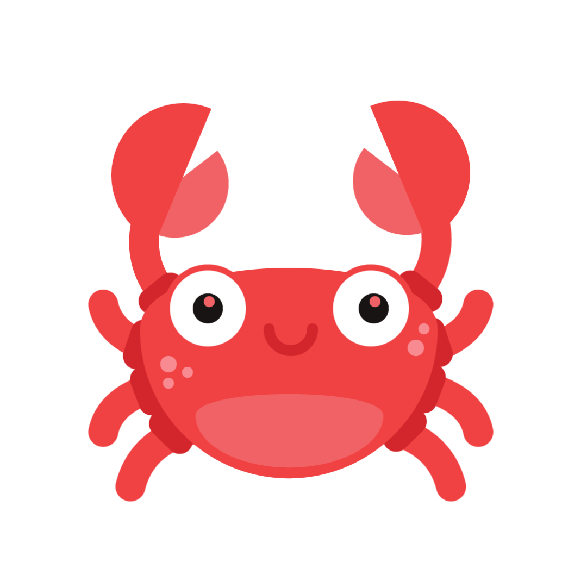
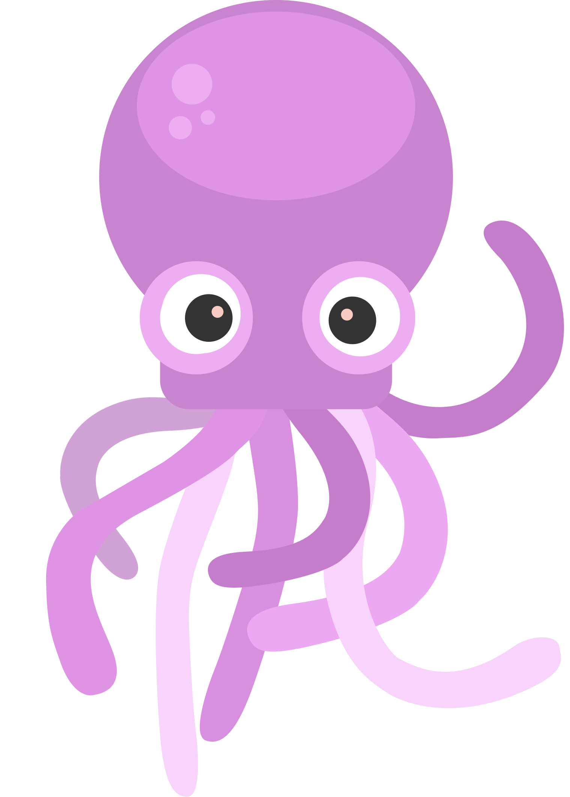

Starfish are spiny, hard-skinned animals that live on the rocky sea floor. They move very slowly along the sea bed, using hundreds of tiny tube feet.
The Pufferfish is called the pufferfish because when it is threatened, it puffs up to about twice its normal size by gulping water.
Crabs are 10-legged animals that walk sideways. Most crabs live in the oceans, but many can live on land.
Jellyfish have soft bodies and long, stinging tentacles that they use to catch fish. A jellyfish is 98% water.
Octopuses are eight-armed animals that live on the ocean floor. An octopus has an eye on each side of its head and has very good eyesight, but it can't hear.
